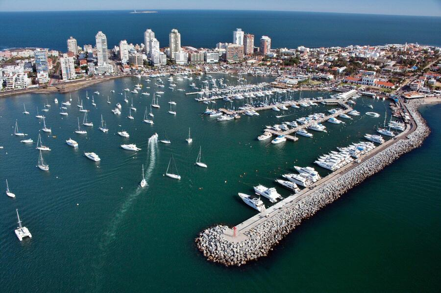

Azotea de Haedo
Teléfono: 4222 3288
Dirección: Del Museo casi Gral. José de San Martín
Descripción:
Fue construida a finales de los años 50 por el ex presidente uruguayo Eduardo Víctor Haedo, con la intención de que fuese un centro cultural, usando para ello su propia residencia. Destaca, aparte de la colección artística, el hermoso jardín que circunda la propiedad. Actualmente depende del BROU y está gestionado por la Fundación Banco República.
| Origen |
Precio de Dia |
Precio de Noche |
Tiempo |
Beverly Hills
Dirección: Pedragosa Sierra
Descripción:
En ubicación al norte de Avda. Roosevelt, a 7 minutos de la Península y del Hotel Conrad, se levantan residencias de majestuoso porte, con metrajes que exceden los 400 m² construidos y jardines de hasta 5.000 m² o aún más.
Mansiones ideales para recibir una cantidad considerable de invitados o realizar las fiestas más importantes de fin de año en Punta del Este.
| Origen |
Precio de Dia |
Precio de Noche |
Tiempo |
Cachimba del Rey
Dirección: Av. Cachimba del Rey, entre Alférez Cámpora y Simón Bolívar
Descripción:
La Cachimba del rey es un rincón histórico de la ciudad de Maldonado (Uruguay). Toma su nombre de una cachimba que desde los inicios fundacionales de la ciudad de Maldonado hacia la segunda mitad del siglo XVIII, abasteció de agua dulce a los pobladores de la zona hasta alrededor del año 1873, siendo reutilizada durante la sequía de 1921 para paliar la falta de agua de la población. "Su agua era de gran pureza y debido a su abundancia se le llamó -del rey- según la costumbre de la época de nombrar así a todo lo que se destacara de sus pares.".
"Leyenda que acuña sueños entre médanos dorados, el que bebe en la cachimba siempre vuelve a Maldonado"
| Origen |
Precio de Dia |
Precio de Noche |
Tiempo |
Casa de la Cultura
Teléfono: 4222 3871
Dirección: Rafael Perez del Puerto entre Roman Guerra y Sarandí
Descripción:
Desde 1875 se reconoce como público este edificio que fue sede sucesivamente de la Policía, posteriormente la Escuela Pública de Varones, y parte de la Aduana en un par de habitaciones ruinosas.
En 1877 se refaccionó para destinarlo a oficinas públicas instalándose en él la Junta Económico Administrativa cuyas oficinas consistían en: despacho, secretaría, sala, biblioteca, receptoría y depósito.
Hasta hace algunos años funcionó aquí la Intendencia Municipal.
Actualmente es un complejo que ha vuelto a ser remodelado y ampliado donde convergen la Dirección de Cultura, la Escuela Municipal de Artes Plásticas, el Museo San Fernando - inaugurado el 5 de enero de 1985 -, la biblioteca municipal y el conservatorio.
Todos los veranos se realiza un ciclo de exposiciones y durante el año, entre sus actividades es centro de reunión de diversos grupos relacionados con la cultura de Maldonado.
| Origen |
Precio de Dia |
Precio de Noche |
Tiempo |
Casa Pueblo
Teléfono: 4257 8611
Dirección: Mar Mediterraneo
Descripción:
Carlos Páez Vilaró nació en la capital uruguaya de Montevideo el 1º de noviembre de 1923. Su vocación artística lo llevó a partir por el mundo y a conocer las más grandes ciudades, hasta que regresó a Uruguay en la década de 1940 para tratar de retratar el candombe (una de sus pasiones) y los ritmos afro-orientales que circulaban en el país.
Su arte lo llevó a viajar por el mundo pintando, esculpiendo y creando, por sobre todas las cosas, y entre tantas de sus creaciones apareció Casapueblo como una escultura en la cual era posible vivir, pintar y recibir a los amigos que le había dado la vida y los viajes.
| Origen |
Precio de Dia |
Precio de Noche |
Tiempo |
Catedral San Fernando
Teléfono: 4222 3342
Dirección: 18 de Julio, 20000 Maldonado, Departamento de Maldonado
Descripción:
La Catedral de Maldonado (también denominada Catedral de San Fernando) es una construcción neoclásica. Su construcción comenzó en 1801 y fue suspendida por las invasiones inglesas de 1806, lo que llevó a que la culminación de la obra demorara casi un siglo. Su inauguración se realizó 94 años más tarde, en el año 1895, por el arzobispo de Montevideo Mariano Soler.
Consta de una nave principal con dos campanarios y una cúpula central. A los costados y al fondo de la nave se disponen dos edificios pequeños que completan el conjunto dando forma de cruz. Su magnífico Altar Mayor es obra de Antonio Veiga, habiendo obtenido dos premios en la exposición continental realizada en Buenos Aires en 1882.
En el mismo, se encuentra la imagen de la Virgen del Carmen, la cual perteneció al vapor "Ciudad del Santander", que naufragó cerca de Isla de Lobos en el año 1829. El Marqués de Comillas, dueño del vapor siniestrado, tras salvarse del naufragio donó la imagen que hoy recibe la veneración, y en cuya base el pintor uruguayo Carlos de Santiago, reprodujo la "Ciudad del Santander".
A la izquierda del Altar se encuentra un Cristo agonizante policromado el cual, perfectamente embalado en un cajón, fue encontrado en las costas del océano, desconociéndose su destino: nadie sabe quién lo hizo, para quién era, ni de dónde vino.
Fue declarada Monumento Histórico Nacional.
| Origen |
Precio de Dia |
Precio de Noche |
Tiempo |
Centro de Convenciones
Teléfono: 4247 7477
Dirección: Av. Pedragosa Sierra esq. Aparicio Saravia
Descripción:
Con un predio de más de 12 hectáreas, "Punta del Este Convention & Exhibition Center" ofrece una infraestructura única para la realización de eventos de toda índole. Sus salas con capacidad para más de 4.000 delegados y su pabellón de exhibiciones de 6.700 m2, sumados a los 60.000 m2 de espacio abierto para la realización de eventos al aire libre ofrecen posibilidades hasta ahora inexistentes en nuestro país.
| Origen |
Precio de Dia |
Precio de Noche |
Tiempo |
Centro de Convenciones
Teléfono: 4247 7477
Dirección: Av. Pedragosa Sierra esq. Aparicio Saravia
Descripción:
Con un predio de más de 12 hectáreas, "Punta del Este Convention & Exhibition Center" ofrece una infraestructura única para la realización de eventos de toda índole. Sus salas con capacidad para más de 4.000 delegados y su pabellón de exhibiciones de 6.700 m2, sumados a los 60.000 m2 de espacio abierto para la realización de eventos al aire libre ofrecen posibilidades hasta ahora inexistentes en nuestro país.
| Origen |
Precio de Dia |
Precio de Noche |
Tiempo |
Cuartel de Dragones
Teléfono: 42 225 378
Horarios: 14:00 a 18:00, Martes cerrado
Dirección: 18 de Julio y Rafael Pérez del puerto
Descripción:
Comenzado a construir en 1771 por el español Bartolomé Howel. Tiene una superficie de 2500 metros cuadrados, toda una manzana hecha la base por piedra de sillería y techos de teja. Este lugar se construyo destinado a un cuartel de Cuerpo de Dragones o Blandengues. Para la historia de Maldonado se destaca el hecho de que el libertador General José Artigas pernoctara en él en el año 1797 cuando formaba parte del cuerpo de Blandengues. En la actualidad en sus instalaciones se realizan exposiciones y en la capilla ceremonias de casamiento por civil.
| Origen |
Precio de Dia |
Precio de Noche |
Tiempo |
Faro Punta del Este

Dirección: Calle 2 de Febrero y Calle 5
Descripción:
Fue construido y entregado al servicio el 17 de noviembre de 1860 por Tomás Libarena, con el fin de orientar la navegación en el Océano Atlántico y el Río de la Plata. El Faro se conserva en perfecto estado hasta el día de hoy debido a que para su construcción se utilizó una mezcla de tierra de origen volcánico procedente de Roma, más dura que el cemento.
Tiene 45 metros de altura y los prismas de cristal que constituyen el sistema de iluminación fueron traídos desde Francia, funciona a electricidad y en caso de emergencia a gas de acetileno. Tiene una altura focal de 44 mts; alcance geográfico de 18 millas, alcance lumínico de 11 millas, intensidad luminosa de 43.000 candelas y emite 2 destellos blancos cada 8 segundos. El ascenso por el interior del Faro es posible a través de una escalera en forma de caracol de 150 escalones.
Al principio se pensaba que el mejor lugar para su instalación era en la isla de lobos, pero los pescadores alegaron que la luz molestaba a los lobos y elefantes marinos, razón por la cual fue trasladado a la península.
| Origen |
Precio de Dia |
Precio de Noche |
Tiempo |
Fundacion Pablo Atchugarry
Teléfono: 4277 5563
Dirección: Ruta 104 Km. 4.5
Descripción:
La Fundación Pablo Atchugarry es una institución sin fines de lucro, obra del escultor Pablo Atchugarry inaugurada en el 2007.
Fue creada con el espíritu de promover las artes plásticas, la literatura, la música , la danza y otras manifestaciones creativas del hombre. Este proyecto social y cultural se construye en forma constante y dinámica, consolidándose a través del trabajo y la experiencia de su fundador.
Su proyección, como un centro de encuentro de todas las disciplinas del arte, permite tanto a maestros de reconocida trayectoria como a jóvenes que inician sus carreras en el arte, exponer sus trabajos.
" El arte es una expresión interior profunda donde pasado y futuro se funden creando una plataforma para el vuelo de las nuevas generaciones..."
| Origen |
Precio de Dia |
Precio de Noche |
Tiempo |
Iglesia de la Candelaria

Teléfono: 4244 0417
Dirección: Calle 5 y 12
Descripción:
La Iglesia de la Candelaria o Parroquia de Santa María de la Candelaria es el templo católico más importante de Punta del Este, Uruguay. Ubicado en la península, constituye un centro de culto importante durante todo el año. A tal punto que la diócesis con jurisdicción sobre este templo se llamó Diócesis de Maldonado y Punta del Este.
Frente a la plaza del Faro de Punta del Este se encuentra el edificio, en cuya fachada impacta el color celeste y en su interior se aprecia una imagen de la Virgen de la Candelaria que provino de España.
| Origen |
Precio de Dia |
Precio de Noche |
Tiempo |
José Ignacio
Dirección: Ruta 10 Km. 179
Descripción:
Existen varias versiones acerca del origen del nombre del balneario. Una de ellas es que el nombre proviene de un antiguo poblador de la zona, llamado José Ignacio Sylveira; otra versión es que refiere al nombre de un faenador o un tropero indio de las Misiones Jesuíticas. En 1763, el Virrey Cevallos creó una estancia en la zona, donde las tierras pertenecían al patrimonio fiscal y la llamó «José Ignacio».
En 1877, se inauguró el Faro de José Ignacio con el objetivo de evitar naufragios en la zona. La empresa Costa y Cía. fue la encargada de controlar el faro, hasta que en 1907, finalizó la concesión y la explotación del mismo pasó al Estado. En esa época la única forma de acceder al lugar era a caballo, en carruajes, o por mar. El Faro de José Ignacio es símbolo del lugar, fue construido en el extremo más saliente y rocoso de la península. Su altura focal es de 32.5 metros, su alcance geográfico de 16.5 millas, y su alcance lumínico de 9 millas.
Se trata de una pequeña península que se interna en el mar a través de sus dos kilómetros de largo y 800 metros de ancho. Hacia el oeste de la península, se encuentra la Playa Brava, que se caracteriza por su ancho y sus grandes olas.Hacia el este, se encuentra localizada la Laguna Garzón,
| Origen |
Precio de Dia |
Precio de Noche |
Tiempo |
Los Dedos
Dirección: Parada 1 playa Brava
Descripción:
"La Mano" que emerge de la arena en plena Parada 1 de la Brava se encuentra allí desde febrero de 1982, cuando el artista chileno Mario Irrazábal llegó invitado por la Intendencia de Maldonado para participar del Primer Encuentro Internacional de Escultura Moderna al Aire Libre de Punta del Este.
Durante todo ese mes, la explanada frente a La Barra se convirtió en un insólito taller al aire libre, donde nueve artistas de diversos países trabajaban.
Irrazábal llegó con una maqueta de plástico y tuvo que improvisar el resto. Tardó seis días en completar la obra.
Con la ayuda de un soldador y de varillas de acero armó los dedos, que luego recubrió con una malla y unos ocho centímetros de estuco.
Tan pronto se convirtió en uno de los símbolos más distintivos de Punta del Este que fue el molde inicial para crear otras obras, que hoy se exhiben en varios países. Manos similares y del mismo autor se pueden ver en Madrid (desde 1987), en el desierto de Atacama (1992) y en Venecia (1995), con la misma fuerza de hito mágico.
Interpretación de la Mano: Significa la presencia del hombre en la naturaleza.
El hombre surgiendo a la vida.
| Origen |
Precio de Dia |
Precio de Noche |
Tiempo |
Museo del Mar
Teléfono: 4277 1817
Dirección: Romildo Risso entre Pedro Aicardi y Av. Juana de América
Descripción:
El Museo del Mar es un museo de historia natural ubicado en La Barra, en el departamento de Maldonado, Uruguay. Cuenta con unos 2.300 m² divididos en cuatro grandes salas, y ofrece su material al público durante todo el año.
El museo, abierto en 1996, cuenta con un acervo de más de 5.000 ejemplares marinos. Los ejemplares están exhibidos con claras referencias, que sirven con finalidad didáctica. Cuenta, entre otras cosas, con esqueletos de ballenas. En sus diversas salas se pueden encontrar erizos, estrellas de mar, caparazones de tortugas, pero también fotografías antiguas, o inclusive uno de los viejos coches para entrar al agua, que utilizaban las mujeres a inicios del siglo XX. También existe una sala con información sobre los piratas más famosos de la historia. En dicha sala se pueden ver catalejos y trabucos de la época.
La enorme cantidad de objetos, muestras, fotos e historias son el resultado del trabajo de su creador Pablo Etchegaray, un coleccionista autodidacta que hace muchos años comenzó a juntar piezas marinas de todo el mundo.
El Museo del Mar se compone de cuatro museos dentro de uno.
| Origen |
Precio de Dia |
Precio de Noche |
Tiempo |
Museo Mazzoni
Teléfono: 4222 1107
Dirección: Calle Ituzaingo 789 casi 18 de Julio
Horarios: Invierno: 13:00 a 18:00 hs Verano: 8:00 a 22.00
Descripción:
Considerado como uno de los rincones más atractivos y sugerentes de la ciudad, el Museo Mazzoni funciona en un añejo caserón patricio cuya planta original data de fin de del siglo XVIII.
El edificio consta de doce salas, adornadas con refinados ejemplares mobiliarios del siglo pasado, y posee dos íntimos patios interiores donde la exuberancia de la vegetación contribuye a recrear el clima evocador de los tiempos de la colonia.
En este ambiente de casa solariega, que alguna vez le valió la paradójica categorización de "museo vivo", el Museo Mazzoni exhibe los mas diversos objetos y colecciones y, entre estos, es posible contemplar muestras de antiguos instrumentales médicos y farmacéuticos, aperos gauchos, armas, artes de pesca, curiosidades artesanales y una considerable muestra de utensilios propios de los indígenas del país. Sin excluir otras sorpresas y curiosidades, como ejemplares disecados de la fauna autóctona u objetos que pertenecieron a celebridades de la talla de Giuseppe Garibaldi.
El edificio consta de doce salas, adornadas con refinados ejemplares mobiliarios del siglo pasado, y posee dos íntimos patios interiores donde la exuberancia de la vegetación contribuye a recrear el clima evocador de los tiempos de la colonia.
| Origen |
Precio de Dia |
Precio de Noche |
Tiempo |
Museo Ralli
Teléfono: 4248 3476
Dirección: Curupay y Los Arrayanes Barrio Beverly Hills
Desceripión:
El Museo Ralli Punta del Este, inaugurado 1988 está situado en el centro del residencial Barrio de Beverly Hills, rodeado por un hermoso parque arbolado de su propiedad donde la arquitectura y la naturaleza se fusionan en un entorno único.
Diseñado y proyectado por los arquitectos uruguayos Marita Casciani y Manuel Quinteiro, exclusivamente para museo con una superficie construida de más de 6.000 metros cuadrados , alterna amplias salas de exposición con patios interiores de gran belleza donde descansan esculturas en bronce y mármol, creando un entorno mágico que enamora a sus visitantes.
| Origen |
Precio de Dia |
Precio de Noche |
Tiempo |
Oh! La Barra
Teléfono: 4277 3896
Dirección: Av. Eduardo Victor Haedo entre Los Romances y Las Brisas
Descripción:
Para la temporada esteña 2013 - 2014, La Barra sorprendía con la Inauguración, del nuevo y tan esperado Centro Comercial, OH! LA BARRA, ideado y diseñado, como "el espacio perfecto" para deleitar y satisfacer a un público tan exigente, internacional y sofisticado como el de Punta del Este.
OH! LA BARRA, se concibió con la premisa de que sea parte del maravilloso paisaje de estas playas, siendo un ''shopping abierto'', que se transformará, en el lugar ideal para la familia, divertido, interesante y atractivo para todas las edades, a sólo unos metros de la playa y en pleno corazón de La Barra.
| Origen |
Precio de Dia |
Precio de Noche |
Tiempo |
Parque Jagüel
Teléfono: 4248-1291
Dirección: Av. Aparicio Saravia esq. Av. Pedragosa Sierra
Descripción:
El Parque Municipal El Jagüel constituye uno de lo más tradicionales paseos de la zona. Tiene una extensión de tres a cuatro manzanas, con calles internas, determinando una zona ideal para cabalgar, pasar un día al aire libre y conectarse con la naturaleza.
Los más chiquitos pueden disfrutar de los juegos de maderas, hechos con troncos del lugar simulando animales, hamacas, toboganes, puentes, etc. Al igual que en todos los parques municipales está previsto que se pueda pasar el día por lo que cuenta con parrilleros, bancos y mesas para disfrutar de asados o un día de picnic.
| Origen |
Precio de Dia |
Precio de Noche |
Tiempo |
Playa Bikini
Dirección: Ruta 10 Km 163.5
Descripción:
Otra de las playas elegidas por los famosos, Bikini es el hot spot del verano.
Hermoso paisaje, mar profundo con buenas olas, arena abundante y con mucha protección natural debido a su formación de pequeñas bahías rocosas en el este.
La gran concurrencia sucita varias actividades que tienen lugar en la tarde, desde clases de surf, jet ski y aeróbica hasta eventos promocionales, desfiles de moda y música de djs al igual que barras de tragos. Cuenta con un pequeño parador que tiene servicio de snacks y comidas livianas donde los comensales pueden disfrutar de la vista acompañado de algo delicioso.
Bikini no es una playa mansa y presenta cierto riesgo al ingresar al mar, por lo cual hay un servicio reforzado de salvavidas para controlar cualquier situación de peligro.
Llega ser la favorita de los círculos argentinos, donde hay mucho glamour y eventos sociales exclusivos.
| Origen |
Precio de Dia |
Precio de Noche |
Tiempo |
Plaza Artigas
Dirección: Av. Gorlero entre calle 25 y 23
Horarios: 17:00 a 02:00, todos los días durante el verano y de 10:00 a 17:00 los Sábados y Domingos.
Descripción:
La plaza Artigas es la principal plaza de la península y se la conoce comúnmente como la plaza de los artesanos, porque en ella funciona desde 1967 una feria artesanal. Ésta cuenta con más de 200 stands en donde se pueden adquirir desde simples souvenirs hasta valiosas joyas en plata, oro y piedras semipreciosas.
En las inmediaciones de los stands hay espacios para artistas plásticos y caricaturistas y en época estival, al llegar la noche, artistas callejeros sorprenden con shows de malabares y títeres haciendo más atractiva su visita.
| Origen |
Precio de Dia |
Precio de Noche |
Tiempo |
Torre del Vigía

Dirección: Rafael Pérez del Puerto entre Zelmar Michelini y Solís
Descripción: La torre demuestra claramente el avance edilicio de la ciudad de Maldonado. En la esquina de Rafael Pérez del Puerto y Zelmar Michellini, en medio de una plaza con el mismo nombre, se construyó a fines del siglo XVIII y principios del XIX la Torre del Vigía.
Su función era vigilar, por ello fue construida en una zona estratégica en donde el terreno se eleva a 39 metros del nivel de mar, permitiendo así, controlar sigilosamente la llegada de los barcos a la costa de Maldonado.
Es difícil, actualmente, pensar que desde esa construcción equilibrada, blanca y sólida se podía divisar el mar, pero con ese fin fueron edificados 13 metros de ladrillo y cal en forma cuadrangular; una puerta de acceso en la base, escaleras y una distinguida baranda de hierro que permitían ver el mar.
Hoy en día es posible subir y divisar la capital fernandina, la Torre ya no cuenta las novedades que ocurren en las puertas del Río de la Plata.
| Origen |
Precio de Dia |
Precio de Noche |
Tiempo |
Plazoleta Gran Bretaña
Dirección: Rambla Artigas
Descripción: Se encuentra ubicada en el punto más austral del país llamado Punta de las Salinas, el mismo establece el límite entre el Río de la Plata y el Océano Atlántico.
Su nombre hace alusión a la histórica Batalla del Río de la Plata que tuvo lugar en 1939 en las cercanías de Punta del Este, en la que participaron el buque Alemán Graff Spee y los cruceros británicos Ajax, Aquiles y Exeter. Testimonio de la Batalla es el ancla del buque Ajax que es posible apreciar en la plaza..
| Origen |
Precio de Dia |
Precio de Noche |
Tiempo |
Puente de la Barra
Dirección: A 10 Km de la Península sobre ruta 10
Descripción: El puente Leonel Viera, más conocido como puente ondulado, no sólo es una de las obras de ingeniería más notables del Uruguay sino que también... es la más divertida.
Pese a que nunca se recibió de ingeniero, el uruguayo Leonel Viera (1913-1975) realizó en 1965 el primer puente ondulado en la desembocadura del Arroyo de Maldonado. Hoy con el fin de facilitar la circulación, de la gran cantidad de visitantes que tiene el balneario de La Barra, es posible contemplar dos puentes ondulados. El segundo se termino de construir en el 2000 respetando las características arquitectónicas del primero.
Atravesar en auto estas dos ingeniosas estructuras provoca en el estómago una sensación única, muy divertida, que lo impulsarán a querer cruzarlo otra vez ó a gritar y querer bajarse del auto.
Viera también proyectó el techo colgante del Cilindro Municipal de Montevideo, colaboró con el puente Paysandú-Colón y otras obras en Argentina, un personaje uruguayo muy creativo, reconocido en el mundo entero.
| Origen |
Precio de Dia |
Precio de Noche |
Tiempo |
Puente Garzón
Dirección: Ruta 10 Km. 191
Descripción: El Puente Laguna Garzón, inaugurado en diciembre 2015, une los departamentos de Rocha y Maldonado, al sur de la Laguna Garzón, próximo a su desembocadura en el Océano Atlántico. Es una maravilla arquitectónica conciliadora y totalmente novedosa. Su forma de anillo sostenido por una serie de columnas permite el libre flujo de los cambios de la laguna y además el uso de embarcaciones, un elemento típico del lugar. Un proyecto de Rafael Viñoli, afamado arquitecto uruguayo reconocido por numerosas obras internacionales y por el diseño del nuevo aeropuerto de Carrasco, en Montevideo, capital de Uruguay.
Posee pasarelas peatonales para el avistamiento paisajístico, tiene 830 metros de barandas externas e internas en acero galvanizado que van desde una a otra cabecera del puente.
| Origen |
Precio de Dia |
Precio de Noche |
Tiempo |
Puerto de Punta del Este

Dirección: Península costa oeste
Descripción: En sus comienzos fue un paradero indígena, luego un pueblo de pescadores. Su primer nombre fue "Villa Ituzaingó" pero en 1907 se solicitó el cambio de nombre y pasó a llamarse definitivamente Punta del Este.
Esta Villa fue fundada en el año 1829 por Don Francisco Aguilar, siendo el primero en explotar los recursos de la zona, desarrollando varias industrias principalmente los saladeros.
Francisco Aguilar arribó a nuestro país en el año 1810, era un hombre de fortuna, fue dueño de una flota de barcos mercantes y el primer armador de barcos del Uruguay, además de estanciero y ganadero, fue dueño de pulperías y político, ocupando varios cargos importantes, Alcalde de Maldonado desde 1829 a 1830, Administrador de Correos en 1834 y Senador en 1840. En Maldonado se radicó en 1811, compró tierras y con pocos colonos se dedicó a la agricultura (las principales plantaciones que le pertenecieron fueron las de tabaco y papas) a la cría de gusanos de seda y a la fabricación de baldosas siendo en Punta del Este donde se instaló la primer fábrica.
La abundancia de ballenas en nuestras costas por aquellos años era tan grande, que durante la Presidencia del General Fructuoso Rivera se le concedió a Aguilar el derecho exclusivo de pescar y faenar estos animales durante 10 años en el Puerto de Maldonado y costas del Estado. Tenía además la concesión para faenar los lobos marinos de Isla de Lobos y del Departamento de Rocha.
Francisco Aguilar como Alcalde de Maldonado participó en la realización de obras públicas como escuelas, cárceles e iglesias, como autoridad máxima del Departamento los ciudadanos del mismo (llamados fernandinos) juraron ante él la Constitución de 1830. Falleció en 1840 a los 64 años ejerciendo el cargo de Senador, dejando a Punta del Este en marcha hacia lo que es hoy.
El 13 de junio de 1843 se vendió la península a los hermanos Samuel y Alejandro Lafone quienes la compraron en 4.500 pesos, así como también la Isla Gorriti la cual costó 1.500 pesos, al igual que Aguilar, los Lafone explotaron los saladeros.
Los vehículos que unían a Punta del Este con la ciudad de Maldonado por aquellos años eran las carretas que debían atravesar enormes médanos de arena y venían por la costa, por ello los primeros animales que se trajeron para trabajar fueron dromedarios y los trajo Aguilar, ya que con otra clase de animales era imposible realizar las tareas diarias Punta del Este era un gran desierto.
Punta del Este le debe a Enrique Burnet gran parte de la forestación que posee pues fue él, quien inició la plantación de pinos en la península, gracias a ellos se pudo contener la avalancha de arena que amenazaba con cubrir la pequeña ciudad.
En 1907 en Punta del Este existía una pequeña población, el Hotel Risso, la Capitanía, el Chalet de Suárez y 50 casas, en este año arribaron los primeros veraneantes a bordo del vapor "Golondrina", fueron un grupo de familias argentinas y montevideanas, invitadas por el Directorio de la Sociedad "Balneario Punta del Este", las cuales arribaron a nuestras costas.
Desde entonces el balneario ha crecido considerablemente en habitantes y en número de visitantes, consolidándose actualmente como uno de los mejores balnearios de Sudamérica.
| Origen |
Precio de Dia |
Precio de Noche |
Tiempo |
San Rafael
Dirección: Península costa oeste
Descripción: El Hotel San Rafael de Punta del Este está ubicado en el barrio San Rafael de Punta del Este, Uruguay, en la parada 11 de la Playa Brava. Se comenzó a construir en el año 1945 y se inauguró en diciembre 1948, por iniciativa del Cr. José Pizzorno Scarone, quien ideó un fraccionamiento de terrenos en la zona, que junto con Manuel Lussich Nin y Laureano Alonsoperez, lo realizaron y le dieron nombre al hotel y su casino.
El Hotel contó durante 10 años con un lujoso Casino privado el cual fue otorgado al amparo de la Ley del 22 de setiembre de 1911, que permitía la explotación de casinos privados a quienes construyeran hoteles en las zonas balnearias. Vencido los 10 años el Casino pasó a un régimen directo de explotación por el Estado incluyendo sus instalaciones y equipamiento total, destacándose en su alhajamiento un juego completo de fichas de nácar.
En el año 1997, coincidiendo con la inauguración de un Hotel y Casino privados, el Estado Uruguayo cerró la sala de Casino del Hotel San Rafael, lo que originó una corriente de huéspedes hacia otros destinos. Esto obligó al Hotel San Rafael a bajar de categoría a tres estrellas en busca de otros segmentos turísticos.
El Hotel, de estilo Tudor, fue símbolo del auge de Punta del Este como principal balneario del Uruguay y uno de los más prestigiosos de Sudamérica. En su etapa de oro en las décadas de 1950 a 1990 sus instalaciones y Casino atrajeron tanto a las familias patricias del Río de la Plata como a figuras de la política, la realeza, las artes y el entretenimiento mundano.
El emblemático Hotel San Rafael ha sido históricamente todo un hito como ámbito de Exposiciones, Convenciones, Reuniones y Conferencias Internacionales. Los salones de eventos del San Rafael, entre ellos el Salón Gótico de capacidad para 1500 asistentes, fue Sede de varios congresos políticos y elegido para la Reunión de Presidentes de América en 1967 y la primera reunión de la Ronda Uruguay del GATT y la OEA, Congreso Interparlamentario, Conferencias del Bid, Cies Cecom y Congresos de las más variadas disciplinas. Su boite “Le Carousel” fue el lugar donde se realizaron espectáculos artísticos de primer nivel mundial.
En la temporada 2011/12, una asociación de inversores argentinos reservó el derecho a adquirirlo, cosa que posteriormente se frustró, no concretándose nunca, hasta hoy, la venta del hotel. La errónea difusión como venta, confundió a la opinión pública porque se mencionó a una determinada empresa y a una cadena hotelera como adquirentes del hotel, cuando no fue así.
Hoy el Hotel San Rafael, por su trayectoria reclama la puesta en valor exigida por su imagen única y de renombre mundial, a fin de lograr recuperar su lugar en el ámbito turístico internacional que ostentó por tantos años. Es reconocido a nivel mundial como uno de los símbolos fuertes de la identidad de Punta del Este que resalta por su relevancia arquitectónica y su rica historia.
<
| Origen |
Precio de Dia |
Precio de Noche |
Tiempo |